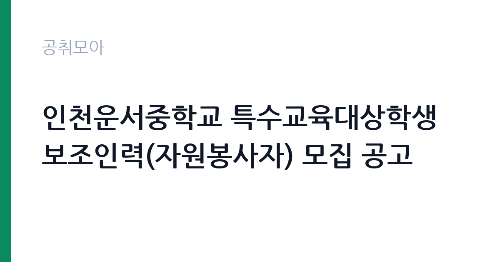

[교육청] 인천운서중학교 특수교육대상학생 보조인력(자원봉사자) 모집 공고
인천광역시교육청 인천광역시남부교육지원청 인천운서중학교 · 인천 · 마감 2026-09-28 (D-6) · 출처 나라일터

한눈에 보는 모집 조건
| 기관 | 인천광역시교육청 인천광역시남부교육지원청 인천운서중학교 |
|---|---|
| 공고명 | 인천운서중학교 특수교육대상학생 보조인력(자원봉사자) 모집 공고 |
| 고용형태 | 정규직 |
| 근무지 | 인천 |
| 게시일 | 2026-09-22 |
| 마감일 | 2026-09-28 (D-6) |
지원자격, 이렇게 읽으세요
- 특수교육대상학생 보조인력(자원봉사자) 1명
- 접수 ~2026-09-28 마감
- 세부 조건은 원문 공고문 확인
모집 분야는 특수교육대상학생 보조인력 자원봉사자로, 자원봉사 성격의 활동입니다. 특수교육과 사회복지, 상담 관련 전공자나 관심 있는 분이 지원 대상으로 적합합니다. 세부 조건과 제출서류는 첨부파일에서 확인하시기 바랍니다. 봉사활동 확인서 발급 여부 등 활동 조건도 원문에서 함께 살펴보시기 바랍니다.
이 공고의 포인트
첫 번째 포인트는 특수교육 현장 경험이라는 점입니다. 특수교사와 특수교육실무사를 목표로 하는 분께 실질적인 현장 경력이 됩니다. 두 번째로 활동 기간이 10월부터 다음 해 2월까지로 한 학기 동안 꾸준한 경험을 쌓을 수 있습니다. 세 번째로 자원봉사자라 금전적 보상은 없거나 실비 수준이지만, 진로 탐색과 봉사 시간 인정 등 다른 보상이 있을 수 있습니다. 교육·복지 분야 진학·취업을 준비하는 분께 적합합니다.
전형은 어떻게 진행되나
전형은 서류 접수 후 면담 등의 절차로 진행될 수 있으며, 세부 내용은 첨부파일에서 확인하시기 바랍니다. 접수 기간은 9월 22일부터 9월 28일까지이며, 현장접수와 이메일 접수가 모두 가능합니다. 활동 시작이 10월 1일로 예정되어 있어 선정 절차가 빠르게 진행될 수 있습니다.
원문에서 확인한 전형 방식
○ 모집분야 : 특수교육대상학생 보조인력(자원봉사자) ○ 고용형태 : 단기간 자원봉사자 ○ 접수기간 : 2026년09월22일 ~ 2026년09월28일 ○ 응시방법 : 현장접수 및 이메일 접수( mo9729017@ice.go.kr) ○ 문의처 : 032-310-8710 ○ 인원: 1명 ○ 활동기간: 2026년 10월 1일(예정) ~ 2027년 2월 5일 ○ 자세한 내용은 첨부파일을 참고하시기 바랍니다.
이런 분께 추천해요
- 특수교육과 특수교사 진로를 준비하시는 분
- 사회복지·상담 관련 전공으로 현장 경험을 쌓고 싶으신 분
- 10월부터 4개월간 꾸준히 봉사할 수 있으신 분
지원 전 체크리스트
- 활동 기간(10월 1일~2027년 2월 5일)에 참여 가능한지 확인했습니다
- 자원봉사 성격과 처우 조건을 원문에서 확인했습니다
- 현장·이메일 접수처를 확인했습니다
- 봉사활동 확인서 발급 여부를 원문에서 확인했습니다
모집 일정과 제출 타이밍
접수는 9월 22일부터 9월 28일까지이며, 활동 시작은 10월 1일로 예정되어 있습니다. 활동 종료는 2027년 2월 5일입니다. 접수 기간이 일주일로 짧으니 서둘러 지원하시기 바랍니다. 활동 기간의 학사 일정과 본인 일정을 미리 대조해 보시기 바랍니다.
직무 이해하기: 교육청
특수교육대상학생 보조인력은 중학교 특수학급에서 학생의 학습과 일상생활을 돕습니다. 수업 보조와 이동 지원, 활동 보조 등이 주요 역할이며, 특수교사의 지시에 따라 움직입니다. 인천 중구의 운서중학교에서 활동하며, 교육청 카테고리 공고입니다.
자기소개서 작성 팁
지원서류에서는 특수교육에 대한 관심과 관련 경험을 진정성 있게 서술하시기 바랍니다. 봉사활동이나 실습, 관련 전공 이수를 구체적으로 기술하시기 바랍니다. 학생을 돕는 보조자로서의 책임감과 인내심을 전달하시기 바랍니다.
면접 준비 포인트
면담에서는 지원 동기와 학생 응대 태도를 확인할 가능성이 큽니다. 특수교육대상학생과의 소통 경험을 묻는다면 솔직하게 답변하시기 바랍니다. 꾸준한 참여 의지를 명확히 전달하시기 바랍니다.
급여·근무조건 읽는 법
처우 조건은 원문 공고문에서 확인하셔야 합니다. 자원봉사자 성격의 활동이므로 급여가 아닌 실비 지원이나 봉사 시간 인정 등의 형태일 수 있습니다. 교통비와 식비 지원 여부, 봉사활동 확인서 발급 조건은 원문과 문의처 032-310-8710을 통해 확인하시기 바랍니다. 금전적 보상을 기대하기보다 진로 경험의 관점에서 검토하시기 바랍니다.
자주 묻는 질문
- 자원봉사자에게 급여가 지급됩니까
자원봉사 성격의 활동으로 급여보다는 실비 지원이나 봉사 시간 인정 등의 형태일 수 있습니다. 정확한 처우는 원문에서 확인하시기 바랍니다. - 활동 기간은 얼마나 됩니까
2026년 10월 1일부터 2027년 2월 5일까지 약 4개월입니다. 학기 일정에 맞춘 기간이므로 꾸준히 참여하실 수 있어야 합니다. - 어떤 일을 합니까
중학교 특수학급에서 특수교육대상학생의 학습과 일상생활을 돕는 보조 역할을 맡습니다. 특수교사의 지도에 따라 활동하게 됩니다.
함께 보면 좋은 공고
[교육청] 전북특별자치도교육청 지방일반임기제공무원( 학생수련지도) 경력경쟁임용시험 시행 계획 공고 — 마감 2026-10-02[교육청] 경상남도교육청 지방임기제공무원(8급) 공개모집 공고 — 마감 2026-10-08[교육청] 휘문중학교 교육공무직원(미화원) 초단시간근로자 채용 공고 — 마감 2026-09-29출처: 나라일터 공개정보를 바탕으로 공취모아가 정리한 안내글입니다. 모집 조건·일정은 변경될 수 있으니 지원 전 반드시 원문 공고문을 확인하세요. 본 글은 정보 제공용이며 합격을 보장하지 않습니다.